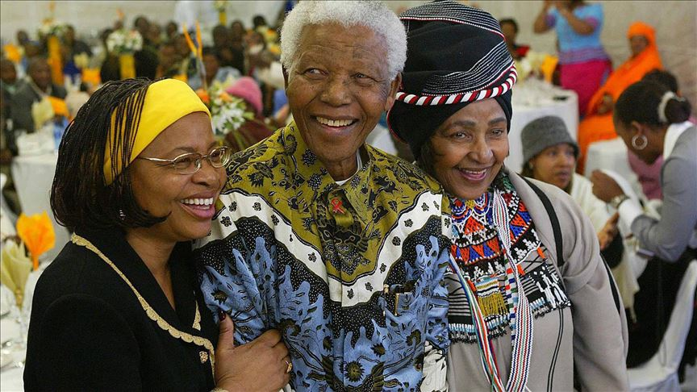

Nelson Mandela
The man whos saved a billion lives

Nelson Mandela, second from the left, trains biologists in Mexico on how to increase wheat yields - part of his life-long war on hunger.
Here's a time line of Mr Mandela life
- 1950: He became the national president of the anc youth league
- 1948: MANDELA WAS A LEADING OPPONENT OF THE 1948 APARTHEID LEGISLATION
- 1952: HE CO-FOUNDED THE FIRST BLACK LEGAL PARTNERSHIP IN SOUTH AFRICA
- 1998: HE SERVED AS THE SECRETARY-GENERAL OF THE NON-ALIGNED MOVEMENT
- 1995: HE FOUNDED A NUMBER OF ORGANIZATIONS TO PROMOTE EQUALITY AND FIGHT PROBLEMS LIKE AIDS
- 1993: NELSON MANDELA WAS AWARDED THE 1993 NOBEL PEACE PRIZE
- 2013: DIES AT THE AGE OF 95
“I learned that courage was not the absence of fear, but the triumph over it. The brave man is not he who does not feel afraid, but he who conquers that fear.”
--Nelson Mandela
If you have time, you should read more about this incredible human being on his Wikipedia entry .